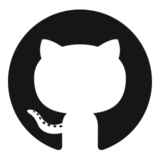
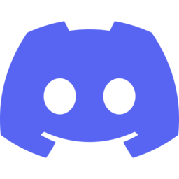
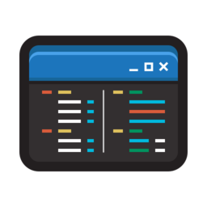

Moją pasją jest tworzenie pięknych i funkcjonalnych stron internetowych.
Czym się zajmuję?
Jestem nastolatkiem z Polski specjalizującym się w tworzeniu stron internetowych. Programuję w HTML, CSS, JavaScript, PHP i Pythonie.
Moje zainteresowania
Lubię zwiedzać lasy w pobliżu mojego miasta, jeździć na rowerze, programować oraz słuchać dużo muzyki. Czasami gram też w gry, na przykład CS2, BeamNG.drive i The Forest.
Kiedy i jak zacząłem programować?
Zacząłem programować 9 listopada 2024 roku, zainspirowany kolegą tworzącym swoją stronę. W trzy tygodnie opanowałem HTML, potem CSS i stworzyłem swoją pierwszą stronę. Miesiąc później poznałem podstawy JavaScriptu, a ostatnio także PHP i Pythona.
Pasjonuję się programowaniem
Programowanie to moja pasja — koduję głównie dla zabawy, tworząc webowe projekty, które są dla mnie zarówno wyzwaniem, jak i okazją do rozwoju. Narazie skupiam się tylko na web developmencie.
Moje projekty
Utrzymywane:
Porzucone:
KotoWeb
Pierwsza strona jaką zrobiłem, Ale zamknąłem ją, ponieważ kod był... nie rozmawiajmy o tym.
PiesoWeb
Moja druga strona internetowa. Była taka sama jak KotoWeb, ale z psami zamiast kotów.
Kontakt/Social media
 Sprawdź mój GitHub
 Discord: @kotokk_dev
Dołącz do serwera: HackSphere
 Obserwuj mnie na TikToku!
Obserwuj mnie na TikToku!
Moje narzędzia
 Edytor kodu: Visual Studio Code
Urządzenie: ThinkPad T495
OS: Windows 11
Dystrybucje linuxa, które używałem:
Mint, Arch, Debian, Peppermint, Kali (nadal wole Windowsa)
Informacje
Tryb ciemny aktywuje się automatycznie między 22:00 a 09:00, aby zapewnić wygodniejsze oglądanie w nocy.
Witam na mojej stronie!
Pen tester
Fullstack deweloper stron internetowych